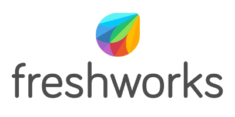
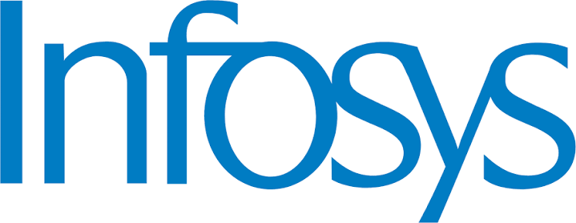
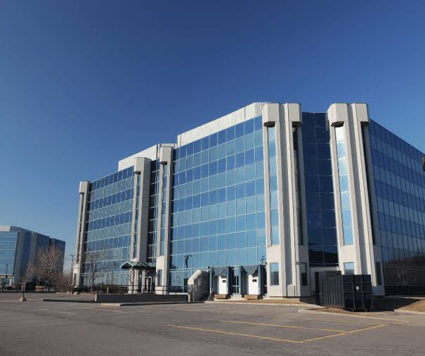
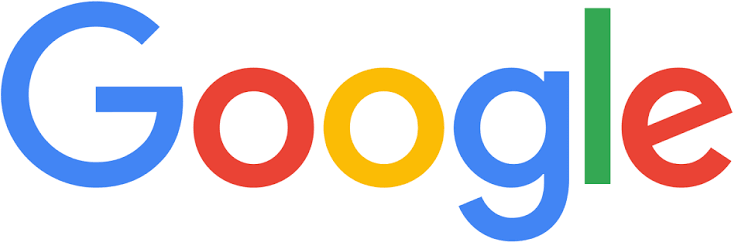
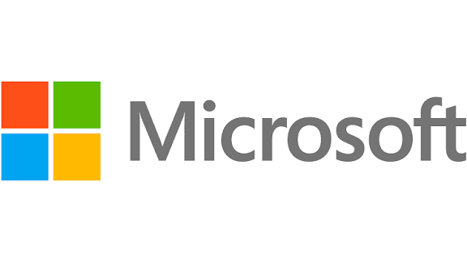
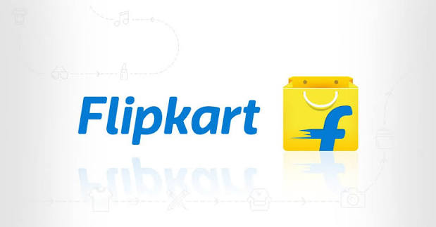
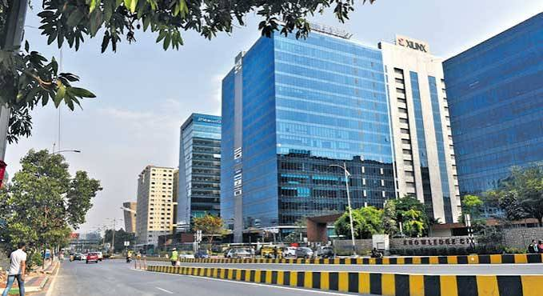
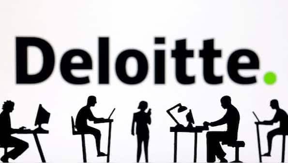
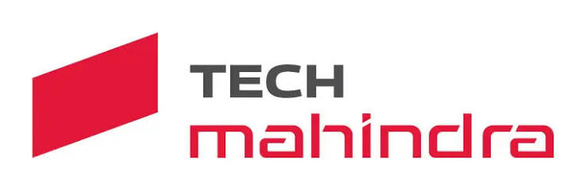

Chennai companies
Known as the "SaaS Capital of India," Chennai is a major hub for global technology services, software product companies, and enterprise IT solutions.
ZOHO

Assuming you meant Zogo, Zogo is an Austin, Texas-based financial technology company founded in 2018 by Simon Komlos and Bolun Li that provides a gamified mobile platform for financial education. It partners with banks, credit unions, and other institutions to offer bite-sized financial literacy lessons where users earn points and real-life rewards. (Note: If you meant the major Indian tech software giant located in your city, please see Zoho Corporation).
View Zoho Page
FRESHWORKS

Freshworks Inc. is a leading global Software-as-a-Service (SaaS) provider that develops cloud-based, AI-powered business software designed to optimize customer and employee experiences. Founded in Chennai, India, in 2010 by Girish Mathrubootham and Shan Krishnasamy, the company famously became the first India-born SaaS firm to go public on the Nasdaq exchange. Operating from its corporate headquarters in San Mateo, California, and maintaining massive functional hubs in India, the enterprise delivers highly intuitive alternatives to clunky legacy IT systems. Its signature product ecosystem—which includes Freshdesk for customer support ticketing, Freshservice for IT Service Management (ITSM), and Freshsales CRM—leverages the domain-specific Freddy AI engine to automate workflows for over 74,000 businesses worldwide, including major global brands like New Balance, Honda, and Bridgestone.
View Freshworks Page
TCS
.jpg)
Tata Consultancy Services (TCS) is an Indian multinational information technology services and consulting company headquartered in Mumbai and operating as the flagship subsidiary of the Tata Group. Founded in 1968 by F.C. Kohli, it has grown into one of the world's largest IT service providers, boasting a workforce of over 600,000 employees globally. TCS serves a diverse base of international clients across major sectors like banking, retail, and manufacturing, delivering a broad suite of solutions ranging from traditional software engineering to cutting-edge cloud computing and enterprise artificial intelligence. As India's largest IT exporter and one of its most valuable market brands, the company drives massive digital transformations globally while maintaining a deep footprint in its home country, where the vast majority of citizen services rely heavily on its underlying technical infrastructure.
View TCS Page
Infosys

infosys IT companies one paragraphInfosys Limited is a prominent Indian multinational information technology corporation headquartered in Bengaluru, India. Founded in 1981 by seven engineers with a starting capital of just $250, it has grown into a global leader in next-generation digital services, business consulting, and outsourcing solutions. As India's second-largest IT exporter after Tata Consultancy Services, Infosys operates across more than 50 countries with a massive workforce of over 320,000 employees. The company pioneered the Global Delivery Model and made history in 1999 as the first Indian company to list on the NASDAQ stock exchange
View Infosys Page
Bangalore companies

Widely recognized as the "Silicon Valley of India," Bangalore is the country's premier technology center, housing global R&D facilities and major startups
GOOGLE

Google LLC is an American multinational technology corporation that stands as one of the world's most powerful and valuable brands. Founded in 1998 by Stanford University graduate students Larry Page and Sergey Brin, the company began as an advanced online search engine operating out of a California garage. Today, as a subsidiary of its parent holding company, Alphabet Inc., Google handles over 70% of global online search requests and commands a massive digital ecosystem. Its extensive portfolio includes leading services like Gmail, YouTube, Google Maps, and the Android operating system, alongside cutting-edge ventures in cloud computing, hardware production, and artificial intelligence.
View Google Page
MICROSOFT

microsoftMicrosoft Corporation is an American multinational technology company headquartered in Redmond, Washington, that stands as the world's largest software vendor and a pioneer of the personal computing revolution. Founded on April 4, 1975, by Bill Gates and Paul Allen, the company achieved global dominance through its flagship operating system, Windows, and its ubiquitous productivity suite, Microsoft Office. Over the decades, Microsoft has expanded far beyond desktop software into cloud computing via Microsoft Azure, artificial intelligence, video gaming with Xbox, hardware, and professional networking through LinkedIn. Today, it is recognized as one of the "Big Tech" giants and consistently ranks as one of the most valuable public companies and influential brands globally.
View microsoft Page
AMAZON

AMAZON Depending on the context, the term Amazon most commonly refers to the world's largest online marketplace, the planet's most expansive tropical rainforest, or the most voluminous river system on Earth.Amazon (The Company)Founded by Jeff Bezos on July 5, 1994, Amazon began as an online bookstore operating out of a garage in Bellevue, Washington. Driven by a customer-centric strategy to become "the everything store," the company rapidly expanded across a multitude of product categories including electronics, media, apparel, and groceries. Today, it is recognized as a global technology giant dominating online shopping, cloud computing via Amazon Web Services (AWS), digital streaming entertainment, and artificial intelligence. By prioritizing broad selection, low prices, and rapid delivery convenience, the platform has fundamentally reshaped global retail and modern consumer habits.
View amazon Page
FLIPKART

flipkartFlipkart is India’s pioneering e-commerce giant, founded in October 2007 by Sachin Bansal and Binny Bansal. Headquartered in Bengaluru, the company initially started as a humble online bookstore operating out of a small apartment. Over the years, it aggressively expanded into diverse categories such as electronics, fashion, home essentials, and groceries. It revolutionized online shopping in India by introducing localized innovations like Cash on Delivery, which successfully bridged the consumer trust gap at a time when digital payment penetration was low. Today, the Flipkart Group Ecosystem serves a massive base of over 500 million registered users, offering more than 150 million products across 80+ categories with the support of its in-house logistics network, Ekart
View flipkart Page
Hyderabad companies

Affectionately nicknamed "Cyberabad," Hyderabad is a booming IT hub home to sprawling technology campuses, global Capability Centers, and cloud giants
MICROSOFT
microsoftMicrosoft Corporation is an American multinational technology company headquartered in Redmond, Washington, that stands as the world's largest software vendor and a pioneer of the personal computing revolution. Founded on April 4, 1975, by Bill Gates and Paul Allen, the company achieved global dominance through its flagship operating system, Windows, and its ubiquitous productivity suite, Microsoft Office. Over the decades, Microsoft has expanded far beyond desktop software into cloud computing via Microsoft Azure, artificial intelligence, video gaming with Xbox, hardware, and professional networking through LinkedIn. Today, it is recognized as one of the "Big Tech" giants and consistently ranks as one of the most valuable public companies and influential brands globally.
View microsoft Page
GOOGLE
Google LLC is an American multinational technology corporation that stands as one of the world's most powerful and valuable brands. Founded in 1998 by Stanford University graduate students Larry Page and Sergey Brin, the company began as an advanced online search engine operating out of a California garage. Today, as a subsidiary of its parent holding company, Alphabet Inc., Google handles over 70% of global online search requests and commands a massive digital ecosystem. Its extensive portfolio includes leading services like Gmail, YouTube, Google Maps, and the Android operating system, alongside cutting-edge ventures in cloud computing, hardware production, and artificial intelligence.
View Google Page
DELIITTE

Deloitte is not a traditional IT product company, but rather the world's largest professional services network that operates as a dominant player in the information technology (IT) sector through its extensive Management Consulting and Technology Advisory branches. Organized under the global umbrella of Deloitte Touche Tohmatsu Limited (DTTL), it functions as a service-based giant rather than selling standalone software. Within the IT landscape, the firm is globally renowned for guiding major corporations through digital transformation, enterprise software implementation (such as SAP and Oracle), cloud computing, cybersecurity, and cutting-edge Agentic and Generative AI integration
View delitte Page
TECH MAHINDRA

Tech Mahindra is a leading global provider of digital transformation, consulting, and business re-engineering services that operates as a prominent IT software and service-based company. As a key part of the multi-billion dollar Mahindra Group conglomerate, the company is headquartered in Pune, India, and maintains a massive global footprint across more than 90 countries. Unlike advisory-focused firms, Tech Mahindra specializes heavily in next-generation technologies. These include 5G telecommunications networks, cloud computing, cybersecurity, blockchain, and advanced Generative AI systems like their indigenous Project Indus large language model.
View tech mahindra Page